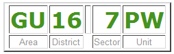

Programs have to process data. In the preceding two courses, we have used the built-in input() function to prompt the user for data we needed. This works well enough for small quantities of data, but would be inconvenient for large amounts. It is much more difficult to write scripts around programs that request data interactively.
Sometimes it's easier for the user, when they are invoking your program by typing a command, to provide information as a part of the command line they enter. Obviously this is most useful for small amounts of data—nobody wants to write an essay at the command line! But for filenames and options (indications to the program of how to modify its processing), the command line is very useful. This also makes writing scripts to use the program much simpler.
Where larger amounts of data are concerned, you frequently get involved in reading textual data and transforming it into other Python types. You have already had to do this when reading numbers via the input() function, since that always returns strings. You have to do similar things when reading from files sometimes. The majority of data arrives as text, because much of it is generated by humans.
Data that arrive in textual form need to be transformed into data that the appropriate Python operations can be performed on. So we are going to start this third course in the Python Certificate Series by looking at another way to get data into your programs, and ensure that it can be transformed safely into appropriate Python data types.
The sys module contains a number of mechanisms for interacting with the system environment, and sys.argv gives you access to the command line the user typed to start the program.
For example, if the user entered the command python myprog.py one two three, sys.argv would contain the value ['myprog.py', 'one', 'two', 'three']. In other words, the program name is sys.argv[0], the first argument to the program call is sys.argv[1] and so on.
In order to understand the procedure, we'll create a program that prints out the contents of its command line. Create cmdline.py as shown:
"""
Simple program to dump the command line arguments
"""
import sys
for n, arg in enumerate(sys.argv):
print(n, ":", arg)
Now you know how to access the command line arguments inside your program. When you run the program, you'd put the data values on the command line (for example, cmdline.py twas brillig and the slithy toves). Here is the output from such a run:
0 : cmdline.py 1 : twas 2 : brillig 3 : and 4 : the 5 : slithy 6 : toves
| Modern Python | Reading raw values out of sys.argv is fine for the simplest scripts, but for
anything with options or flags the standard library's argparse module is the modern choice—it
parses arguments, generates --help text, validates types, and reports usage errors
automatically. The older getopt and optparse modules still exist, but
argparse superseded them. |
You have already learned quite a lot about Python strings, and this knowledge will be useful when it comes to accepting data from the user and ensuring, before you try to use it in calculations or for other purposes, that it is appropriate for the intended use.
Ideally, a program should never use data inputs from the user without first checking their reasonableness. Quite often, you need to validate input data by verifying that it conforms to a specific pattern. For example, US ZIP codes are either five digits (the older short form) or nine digits with a dash between the fifth and sixth digit. UK postal codes are somewhat more complicated, with two groups of characters separated by a space. The first group is one or two letters followed by one or two digits, the second group is always one digit followed by two letters:

Other validations might require not only that inputs are numbers, but that they fall within a specific range. The methods of Python's string objects, together with the ability to "carve up" a string using slicing, can be used to perform a limited analysis of a string's contents. If these techniques do not suffice, we need to "bring out the big guns" and use regular expressions, which you will learn about in due course.
For a validation routine, you might decide to return True if the data is acceptable and False if it is not. That approach makes it difficult for the user, though. It is less than helpful to tell them "something is wrong with this data"—you need to explain what is wrong with it, and ideally, how they can fix it. This, in turn, means that you have to have some way of getting error indications back from the validation process.
One simple way of validating is to write a function that returns an error message if something is wrong, or None when there are no problems with the data. Once you have saved the result of the function, you can test it (immediately or later) and display the error message if appropriate. You need to be careful with naming of such functions. The result they return will test as True when errors are detected, so use a name like data_errors() rather than verify_data(), because when the function returns a value it signifies there are errors in the data.
If you want your error checking to be particularly complete, you might want to return more than one error message about a particular piece of data. The natural way to return this would be to accumulate a list inside the validation function and then return the list. If the list is empty, the data is valid. You will see examples of various techniques in the remainder of this lesson.
The primary issue with testing validation routines is that the routines are designed to succeed or fail according to the "goodness" of the input data. You therefore need to test both that correct data are correctly validated and that incorrect data are correctly declared invalid.
This means you need two kinds of tests: you have to test that the function fails on bad data, and that it succeeds on good data. If it doesn't do both of these things, it isn't working.
Suppose that you want to verify that a string contains an acceptable US zip code. This kind of task can be puzzling, but it is worth trying to work out for yourself the logic you would apply. The most straightforward and readable way is usually the best—don't worry about efficiency unless you experience a performance problem (you usually won't).
In this particular case, the conditions are fairly easily stated: The zip code must be a string of length five or ten characters. The first five must be numeric; if the length of the string is ten, the sixth character must be a minus sign and the last four must be numeric. Before you get carried away, though, think about how you are going to provide this functionality. Since a zip code check might be useful in all sorts of contexts it probably makes sense to write a function, in a module on its own (you can add other address checking functionality later).
Next, you need to decide on an API for your verification function and write some tests for it. For simplicity, let's just say that it returns a single error message when it finds a problem with the zip code. Remember, if a function continues execution until it "drops off the end," the call will automatically return None, indicating success.
You will start, as usual, by writing the tests. Create a new module test_zipcheck.py and modify the code as shown:
'''
Created on Aug 29, 2010
@author: sholden
Test the zip_errors() function from the zipcheck module
'''
import unittest
from zipcheck import zip_errors
class Test(unittest.TestCase):
def testName(self):
def test_zip_errors(self):
"Tests ensuring errors in data cause validation failures."
raise TypeError("No tests yet present.")
def test_zip_successes(self):
"Test ensuring that valid data passes."
pass
if __name__ == "__main__":
#import sys;sys.argv = ['', 'Test.test_zip_errors']
unittest.main()
Before running this program you want to make sure that you at least provide a stub zip_errors() function so that your tests fail rather than giving errors when trying to import the function, so create the zipcheck.py file as shown below. Note that the stub returns None—although a stub should ideally fail, and the default value of None returned by a stub containing only a pass statement will be regarded as successful, you cannot implement a stub that fails when it is supposed to and succeeds when it is supposed to without writing the validation function in all its glory!
'''
zipcheck.py: validation function for US zip codes
'''
def zip_errors(z):
"""
Validate z as either NNNNN or NNNNN-NNNN.
"""
pass
Save and run your test_zipcheck.py file now. It shows a failure.
E.
======================================================================
ERROR: test_zip_errors (__main__.Test.test_zip_errors)
Tests ensuring errors in data cause validation failures.
----------------------------------------------------------------------
Traceback (most recent call last):
File "test_zipcheck.py", line 15, in test_zip_errors
raise TypeError("No tests yet present.")
TypeError: No tests yet present.
----------------------------------------------------------------------
Ran 2 tests in 0.000s
FAILED (errors=1)
As usual, this is hardly surprising with an empty stub replacing the desired functionality. Note, however, that the second test passes in its entirety. This is because the function has to either succeed or fail, and since by default it succeeds, by default good zip codes are accepted as good.
In fact the second test is there to verify that there are no failures to accept good data. Unless you induce such failures, you will probably never see a failure of this test. If you do, however, you know something serious has gone wrong. Furthermore the first test, being a stub, would have also succeeded if you hadn't specifically made it fail with the raise statement.
You can remove the raise as soon as you introduce real tests, which is the next step. You are going to add negative tests, which will fail if the validation function affirms data acceptable when it should not be, and positive tests, which will fail if the function refuses to accept a string when it should.
This is a matter of balance. For now, leave your stub function as it is and make the tests a little more comprehensive.
'''
Created on Aug 29, 2010
@author: sholden
Test the zip_errors() function from the zipcheck module
'''
import unittest
from zipcheck import zip_errors
class Test(unittest.TestCase):
def test_zip_errors(self):
"Tests ensuring that errors in data cause validation failures."
raise TypeError("No tests yet present.")
self.assertIsNotNone(zip_errors("1234"), "Accepting length 4")
self.assertIsNotNone(zip_errors("12345-678"), "Accepting length 9")
self.assertIsNotNone(zip_errors("1234e"), "Accepting alphabetic 5")
self.assertIsNotNone(zip_errors("12345-678Y"), "Accepting alphabetic 5+4")
self.assertIsNotNone(zip_errors("12345/6789"), "Accepting non-hyphen")
def test_zip_successes(self):
"Test ensuring that valid data passes."
pass
self.assertIsNone(zip_errors("12345"), "Not accepting 5-digit zips")
self.assertIsNone(zip_errors("12345-6789"), "Not accepting 9-digit zips")
if __name__ == "__main__":
#import sys;sys.argv = ['', 'Test.test_zip_errors']
unittest.main()
Save and run the test. We still see a failure, but now at least we can see that zip codes of incorrect length are being caught.
F.
======================================================================
FAIL: test_zip_errors (__main__.Test.test_zip_errors)
Tests ensuring that errors in data cause validation failures.
----------------------------------------------------------------------
Traceback (most recent call last):
File "test_zipcheck.py", line 15, in test_zip_errors
self.assertIsNotNone(zip_errors("1234"), "Accepting length 4")
~~~~~~~~~~~~~~~~~~~~^^^^^^^^^^^^^^^^^^^^^^^^^^^^^^^^^^^^^^^^^^
AssertionError: unexpectedly None : Accepting length 4
----------------------------------------------------------------------
Ran 2 tests in 0.000s
FAILED (failures=1)
So now we need to enhance zipcheck to test the length of the input. There are only two valid values.
'''
zipcheck.py: validation function for US zip codes
'''
def zip_errors(z):
"""
Validate z as either NNNNN or NNNNN-NNNN.
"""
pass
l = len(z)
if l not in (5, 10):
return "Zip codes should be 5 or 10 characters long"
return
Save and run the test. Notice that the validation function now accepts an input as valid if it doesn't specifically find anything wrong with it. This requires your error checks to be exhaustive (which they aren't at the moment, as you discover by running your tests again).
F.
======================================================================
FAIL: test_zip_errors (__main__.Test.test_zip_errors)
Tests ensuring that errors in data cause validation failures.
----------------------------------------------------------------------
Traceback (most recent call last):
File "test_zipcheck.py", line 17, in test_zip_errors
self.assertIsNotNone(zip_errors("1234e"), "Accepting alphabetic 5")
~~~~~~~~~~~~~~~~~~~~^^^^^^^^^^^^^^^^^^^^^^^^^^^^^^^^^^^^^^^^^^^^^^^
AssertionError: unexpectedly None : Accepting alphabetic 5
----------------------------------------------------------------------
Ran 2 tests in 0.000s
FAILED (failures=1)
You also need to make sure that the first five characters of the zip are all numeric (and for ten-digit inputs, that the last four characters are numeric too). This is a relatively simple modification: you just return an error message complaining about the characters unless they are all numeric. The only slightly tricky part is not testing the last four unless the length of the input is ten.
'''
zipcheck.py: validation function for US zip codes
'''
def zip_errors(z):
"""
Validate z as either NNNNN or NNNNN-NNNN.
"""
l = len(z)
if l not in (5, 10):
return "Zip codes should be 5 or 10 characters long"
if (not z[:5].isdigit() or
len(z) == 10 and not z[6:].isdigit()):
return "Zip code contains non-numeric characters"
return
Save and run the test. Now the function correctly raises errors for zips with non-numeric characters in them, but you still see failures because there is nothing yet that checks to make sure that, in a zip+4, the two parts of the zip are separated by a dash.
F.
======================================================================
FAIL: test_zip_errors (__main__.Test.test_zip_errors)
Tests ensuring that errors in data cause validation failures.
----------------------------------------------------------------------
Traceback (most recent call last):
File "test_zipcheck.py", line 19, in test_zip_errors
self.assertIsNotNone(zip_errors("12345/6789"), "Accepting non-hyphen")
~~~~~~~~~~~~~~~~~~~~^^^^^^^^^^^^^^^^^^^^^^^^^^^^^^^^^^^^^^^^^^^^^^^^^^
AssertionError: unexpectedly None : Accepting non-hyphen
----------------------------------------------------------------------
Ran 2 tests in 0.000s
FAILED (failures=1)
The final test makes sure that ten-digit zips have a dash in the correct position. This is the last check that we can make—any zip that passes all those tests is good. If none of the tests detect a failure it's OK to succeed by returning None, which as usual happens by default.
'''
zipcheck.py: validation function for US zip codes
'''
def zip_errors(z):
"""
Validate z as either NNNNN or NNNNN-NNNN.
"""
l = len(z)
if l not in (5, 10):
return "Zip codes should be 5 or 10 characters long"
if (not z[:5].isdigit() or
(len(z) == 10 and not z[6:].isdigit())):
return "Zip code has non-numeric characters"
if l == 10 and z[5] != "-":
return "Ten-digit zips must have a dash between the two parts"
return
Save and run the test. Finally, it passes! The bad zip codes are returning error messages and the good zip codes aren't.
.. ---------------------------------------------------------------------- Ran 2 tests in 0.000s OK
Notice that separation between the tests of good zips and the tests of bad zips made it somewhat easier to observe that the test coverage was improving. The fact that the second test always succeeded simply shows that the code was developing along the right lines. Had it failed at any time, you would have seen that the validator was failing to approve valid data, which would have been valuable feedback.
So, that gives you a brief introduction to data validation in Python. Ideally you should never use data that has not been through some validation process. Failure to validate inputs is the source of many well-known security issues, including "buffer overflow" attacks and "SQL Injection" attacks. Get in the habit of validating your data, and make sure that you use tested validation routines so you can have a reasonable degree of confidence that they are going to validate as expected.